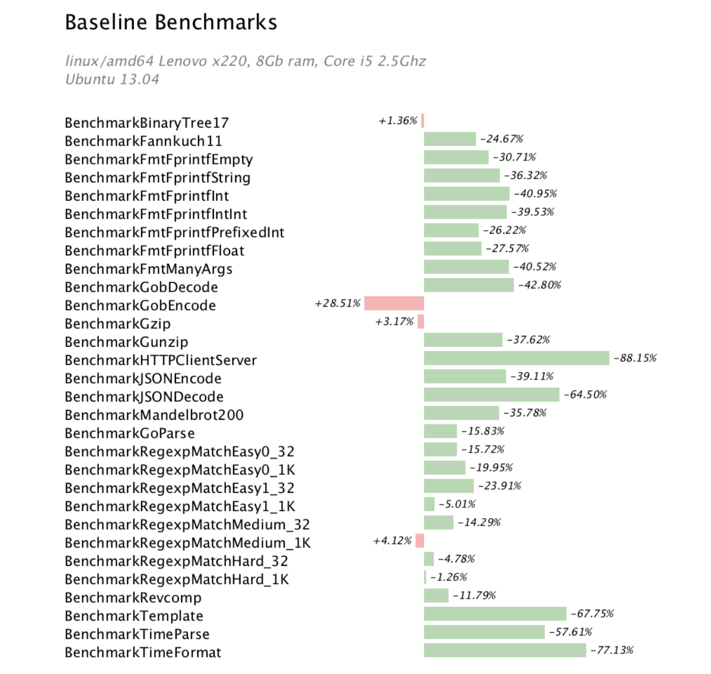
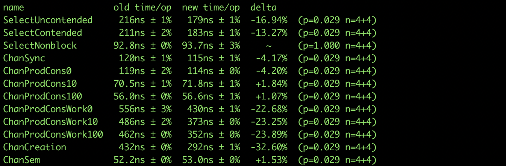
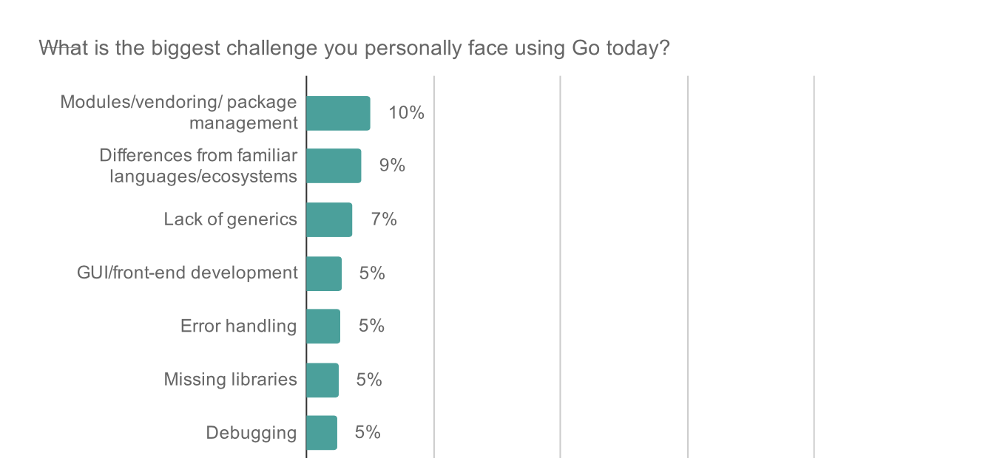
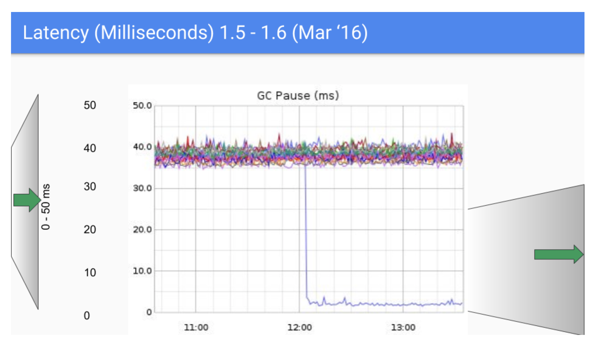
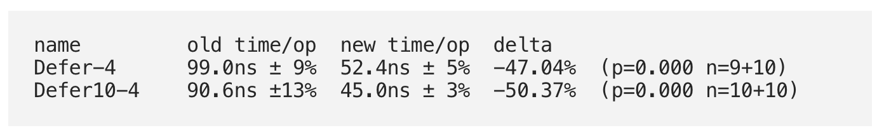
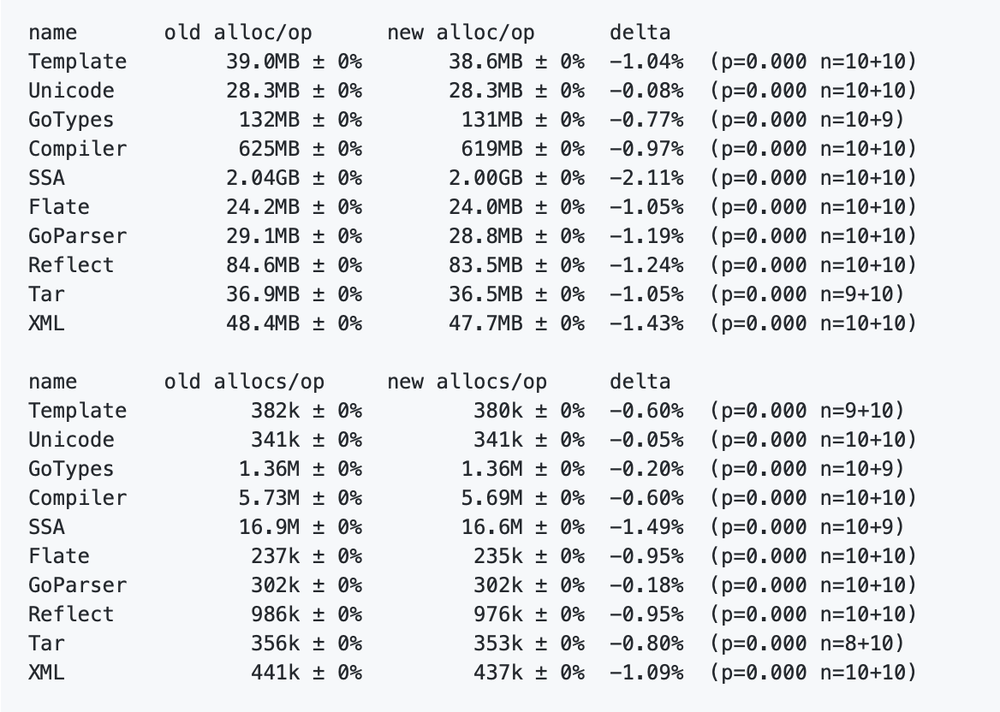

- 00 开篇词 怎样成长为优秀的软件架构师？.md.html
- 01 架构设计的宏观视角.md.html
- 02 大厦基石：无生有，有生万物.md.html
- 03 汇编：编程语言的诞生.md.html
- 04 编程语言的进化.md.html
- 05 思考题解读：如何实现可自我迭代的计算机？.md.html
- 06 操作系统进场.md.html
- 07 软件运行机制及内存管理.md.html
- 08 操作系统内核与编程接口.md.html
- 09 外存管理与文件系统.md.html
- 10 输入和输出设备：交互的演进.md.html
- 11 多任务：进程、线程与协程.md.html
- 12 进程内协同：同步、互斥与通讯.md.html
- 13 进程间的同步互斥、资源共享与通讯.md.html
- 14 IP 网络：连接世界的桥梁.md.html
- 15 可编程的互联网世界.md.html
- 16 安全管理：数字世界的守护.md.html
- 17 架构：需求分析 (上).md.html
- 18 架构：需求分析 (下) · 实战案例.md.html
- 19 基础平台篇：回顾与总结.md.html
- 20 桌面开发的宏观视角.md.html
- 21 图形界面程序的框架.md.html
- 22 桌面程序的架构建议.md.html
- 23 Web开发：浏览器、小程序与PWA.md.html
- 24 跨平台与 Web 开发的建议.md.html
- 25 桌面开发的未来.md.html
- 26 实战（一）：怎么设计一个“画图”程序？.md.html
- 27 实战（二）：怎么设计一个“画图”程序？.md.html
- 28 实战（三）：怎么设计一个“画图”程序？.md.html
- 29 实战（四）：怎么设计一个“画图”程序？.md.html
- 30 实战（五）：怎么设计一个“画图”程序？.md.html
- 31 辅助界面元素的架构设计.md.html
- 32 架构：系统的概要设计.md.html
- 33 桌面开发篇：回顾与总结.md.html
- 34 服务端开发的宏观视角.md.html
- 35 流量调度与负载均衡.md.html
- 36 业务状态与存储中间件.md.html
- 37 键值存储与数据库.md.html
- 38 文件系统与对象存储.md.html
- 39 存储与缓存.md.html
- 40 服务端的业务架构建议.md.html
- 41 实战（一）：“画图”程序后端实战.md.html
- 42 实战（二）：“画图”程序后端实战.md.html
- 43 实战（三）：“画图”程序后端实战.md.html
- 44 实战（四）：“画图”程序后端实战.md.html
- 45 架构：怎么做详细设计？.md.html
- 46 服务端开发篇：回顾与总结.md.html
- 47 服务治理的宏观视角.md.html
- 48 事务与工程：什么是工程师思维？.md.html
- 49 发布、升级与版本管理.md.html
- 50 日志、监控与报警.md.html
- 51 故障域与故障预案.md.html
- 52 故障排查与根因分析.md.html
- 53 过载保护与容量规划.md.html
- 54 业务的可支持性与持续运营.md.html
- 55 云计算、容器革命与服务端的未来.md.html
- 56 服务治理篇：回顾与总结.md.html
- 57 心性：架构师的修炼之道.md.html
- 58 如何判断架构设计的优劣？.md.html
- 59 少谈点框架，多谈点业务.md.html
- 60 架构分解：边界，不断重新审视边界.md.html
- 61 全局性功能的架构设计.md.html
- 62 重新认识开闭原则 (OCP).md.html
- 63 接口设计的准则.md.html
- 64 不断完善的架构范式.md.html
- 65 架构范式：文本处理.md.html
- 66 架构老化与重构.md.html
- 67 架构思维篇：回顾与总结.md.html
- 68 软件工程的宏观视角.md.html
- 69 团队的共识管理.md.html
- 70 怎么写设计文档？.md.html
- 71 如何阅读别人的代码？.md.html
- 72 发布单元与版本管理.md.html
- 73 软件质量管理：单元测试、持续构建与发布.md.html
- 74 开源、云服务与外包管理.md.html
- 75 软件版本迭代的规划.md.html
- 76 软件工程的未来.md.html
- 77 软件工程篇：回顾与总结.md.html
- 加餐 如何做HTTP服务的测试？.md.html
- 加餐 实战：“画图程序” 的整体架构.md.html
- 加餐 怎么保障发布的效率与质量？.md.html
- 热点观察 我看Facebook发币（上）：区块链、比特币与Libra币.md.html
- 热点观察 我看Facebook发币（下）：深入浅出理解 Libra 币.md.html
- 用户故事 站在更高的视角看架构.md.html
- 答疑解惑 想当架构师，我需要成为“全才”吗？.md.html
- 结束语 放下技术人的身段，用极限思维提升架构能力.md.html
- 课外阅读 从《孙子兵法》看底层的自然法则.md.html
- 捐赠
75 软件版本迭代的规划
75 | 软件版本迭代的规划你好，我是七牛云许式伟。
到今天为止，我们专栏的话题主要集中在软件工程的质量与效率上。我们在专栏的开篇中就已经明确：
从根本目标来说，软件架构师要对软件工程的执行结果负责，这包括：按时按质进行软件的迭代和发布、敏捷地响应需求变更、防范软件质量风险（避免发生软件质量事故）、降低迭代维护成本。
但是今天，我们将探讨一个更高维的话题：软件版本迭代的规划。后续我们简称为 “版本规划”。简单说，就是下一步的重点应该放在哪里，到底哪些东西应该先做，哪些东西应该放到后面做。
这是一个极其关键的话题。它可以影响到一个业务的成败，一个企业的生死存亡。方向正确，并不代表能够走到最后，执行路径和方向同等重要。
那么，版本规划的套路是什么？
探讨这个问题前，我想先看一个实际的案例。这个案例大家很熟悉：Go 语言的版本迭代。
我们从 Go 语言的演进，一起来看看 Go 团队是如何做软件版本迭代规划的。这有点长，但是细致地琢磨对我们理解版本规划背后的逻辑是极其有益的。
Go 版本的演进历史
Go 语言的版本迭代有明确的周期，大体是每半年发布一个版本。
Go 1.0 发布于 2012 年 3 月，详细 ReleaseNote 见 https://tip.golang.org/doc/go1。它是 Go 语言发展的一个里程碑。
在这个版本，Go 官方发布了兼容性文档：https://tip.golang.org/doc/go1compat，承诺会保证未来的 Go 版本将保持向后兼容。也就是说，将始终兼容已有的代码，保证已有代码在 Go 新版本下编译和运行的正确性。
在 Go 1.0 之前，Go 在持续迭代它的使用范式，语法规范也在迭代优化。比如 os.Error 到了 Go 1.0 就变成了内置的 error 类型。这个改变看似很小，但实际上是一个至关重要的改变。因为 Go 推荐可能出错的函数返回值都带上 err 值，如果 os.Error 不改为内建类型，就会导致很多模块不得不因为 os.Error 类型而依赖 os 包。
Go 1.0 最被诟病的问题是它的 GC 效率。相比 Java 近 20 年的长期优化，其成熟度只能以稚嫩来形容。
与此相对应的是，Go 从一开始就是一门极度重视工程的语言。Go 1.0 就已经有非常完善的工程工具支持。比如：
- 单元测试：go test；
- 文档：go doc；
- 静态检查工具：go vet；
- 性能 Profile 工具: go tool pprof。
Go 1.1 发布于 2013 年 5 月，详细 ReleaseNote 见 https://tip.golang.org/doc/go1.1。这个版本主要专注于语言内在机制的改善和性能提升（编译器、垃圾回收、map、goroutine调度）。改善后的效果如下：

这个版本还发布了一个竞态探测器(race detector)，它对 Go 这种以高并发著称的语言显然是重要的。详细可参考 Go 官方博客文章：https://blog.golang.org/race-detector。
Go 1.2 发布于 2013 年 12 月，详细 ReleaseNote 见 https://tip.golang.org/doc/go1.2。这个版本发布了单元测试覆盖率检查工具：go tool cover。详细可参考 Go 官方博客文章：https://blog.golang.org/cover。
Go 1.3 发布于 2014 年 6 月，详细 ReleaseNote 见 https://tip.golang.org/doc/go1.3。这个版本栈的内存分配引入了连续段（contiguous segment）的分配模式，以提升执行效率。之前的分页式的栈分配方式（segment stack）存在频繁地分配/释放栈段导致栈内存分配耗时不稳定且效率较低。引入新机制后，分配稳定性和性能都有较大改善。
Go 1.3 还引入了 sync.Pool，即内存池组件，以减少内存分配的次数。标准库中的 encoding/json、net/http 等都受益于它带来的内存分配效率提升。另外，Go 还对 channel 进行了性能优化：

Go 1.4 发布于 2014 年 12 月，详细 ReleaseNote 见 https://tip.golang.org/doc/go1.4。从功能来说，这个版本最大的一件事情是增加了 Android/iOS 支持（http://golang.org/x/mobile），Gopher 可以使用 Go 编写简单的 Android/iOS 应用。
但实际上如果从重要程度来说，Go 1.4 最重要的变化是将之前版本中大量用 C 语言和汇编语言实现的 runtime 改为用 Go 实现，这让垃圾回收器执行更精确，它让堆内存的分配减少了 10~30%。
另外，Go 1.4 引入了 go generate 工具。这是在没有泛型之前解决重复性代码问题的方案。详细见https://blog.golang.org/generate。
Go 1.5 发布于 2015 年 8 月，详细 ReleaseNote 见 https://tip.golang.org/doc/go1.5。这个版本让 Go 实现了自举。这让GC 效率优化成为可能。所以在这个版本中，GC 被全面重构。由于引入并发垃圾回收，回收阶段带来的延迟降低了一个数量级。
这个版本还有一个很重要的尝试，是引入了 vendor 机制以试图解决 Go 模块的版本管理问题。自从 Go 解决了 GC 效率后，Go 版本管理就成了老大难问题。下图是 Go 社区对 Go 面临的最大挑战的看法：

当然后来事实证明 vendor 机制并不成功。
另外，Go 1.5 引入了 go tool trace，通过该命令我们可以实现执行器的跟踪(trace)。详细参考 https://golang.org/cmd/trace/。
Go 1.6 发布于 2016 年 2 月，详细 ReleaseNote 见 https://tip.golang.org/doc/go1.6。垃圾回收器的延迟在这个版本中进一步降低。如下：

从功能上来说，这个版本支持了 HTTP/2。
Go 1.7 发布于 2016 年 8 月，详细 ReleaseNote 见 https://tip.golang.org/doc/go1.7。这个版本有一个很重要的变化，是 context 包被加入标准库。这事之所以重要，是因为它和 os.Error 变成内建的 error 类型类似，在网络接口中，context 是传递上下文、超时控制及取消请求的一个标准设施。
另外，Go 编译器的性能得到了较大幅度的优化，编译速度更快，二进制文件size更小，有些时候幅度可达 20~30%。
Go 1.8 发布于 2017 年 2 月，详细 ReleaseNote 见 https://tip.golang.org/doc/go1.8。GC 延迟在这个版本中进一步得到改善，延迟时间降到毫秒级别以下。
另外，这个版本还大幅提升了defer的性能。如下：

Go 1.9 发布于 2017 年 8 月，详细 ReleaseNote 见 https://tip.golang.org/doc/go1.9。这个版本引入了 type alias 语法。例如：
type byte = uint8
这实际上是一个迟到的语法。我在 Go 1.0 就认为它应该被加入了。另外，sync 包增加了 Map 类型，以支持并发访问（原生 map 类型不支持）。
Go 1.10 发布于 2018 年 2 月，详细 ReleaseNote 见 https://tip.golang.org/doc/go1.10。在这个版本中，go test 引入了一个新的缓存机制，所有通过测试的结果都将被缓存下来。当 test 没有变化时，重复执行 test 会节省大量时间。类似地，go build 也维护了一个已构建的包的缓存以加速构建效率。
Go 1.11 发布于 2018 年 8 月，详细 ReleaseNote 见 https://tip.golang.org/doc/go1.11。这个版本最重要的新功能是 Go modules。前面我们说 Go 1.5 版本引入 vendor 机制以解决模块的版本管理问题，但是不太成功。这是 Go 团队决定推翻重来引入 module 机制的原因。
另外，这个版本引入了一个重要的试验功能：支持 WebAssembly。它允许开发人员将 Go 源码编译成一个兼容当前主流浏览器的 wasm 文件。这让 Go 作为 Web 开发语言成为可能。
Go 1.12 发布于 2019 年 2 月，详细 ReleaseNote 见 https://tip.golang.org/doc/go1.12。这个版本的 go vet 命令基于 analysis 包进行了重写，使得 go vet 更为灵活并支持 Gopher 编写自己的 checker。详细参考 “How to Build Your Own Analyzer” 一文。
Go 1.13 发布于 2019 年 8 月，详细 ReleaseNote 见 https://tip.golang.org/doc/go1.13。这个版本的 sync.Pool 性能得到进一步的改善。当 GC 时，Pool 中对象不会被完全清理掉。它引入了一个 cache，用于在两次 GC 之前清理 Pool 中未使用的对象实例。
另外，这个版本的逃逸分析（escape analysis）被重新实现了，这让 Go 更少地在堆上分配内存。下图是新旧逃逸分析的基准测试对比：

另外，Go modules 引入的 GOPROXY 变量的默认值被改为：
GOPROXY=https://proxy.golang.org,direct
但在国内无法访问 Go 官方提供的 proxy.golang.org 站点。建议改为：
export GOPROXY=https://goproxy.cn,direct
这里 https://goproxy.cn 由七牛云赞助支持。
Go 版本迭代的背后
Go 语言的版本迭代的规划非常值得认真推敲与学习。
Go 的版本迭代还是比较高频的，但是有趣的是，在 Go 1.0 版本之后，语言本身的功能基本上已经非常稳定，只有极少量的变动。比如 type alias 这样的小特性，都已经可以算是关键语法变化了。
那么，这些年 Go 语言都在变化些什么？
其一，性能、性能、性能！尤其在 GC 效率这块，持续不断地优化。为了它，大范围重构 Go 的实现，完成了自举。其他还有很多，比如连续栈、内存池（sync.Pool）、更快的编译速度、更小的可执行文件尺寸。
其二，强化工程能力。各种 Go tool 的增加就不说了，这其中最为突出的就是 Go 模块的版本管理，先后尝试了 vendor 和 module 机制。
其三，标准库的能力增强，如 context，HTTP 2.0 等等。这块大部分比较常规，但 context 的引入可以算是对网络编程最佳实践的一次标准化过程。
其四，业务领域的扩展。这块 Go 整体还是比较专注于服务端领域，只是对 Android、iOS、WebAssembly 三个桌面平台做了经验性的支持。
如何做版本规划
蛮多技术背景的同学在做版本规划的时候，往往容易一开始就陷入到技术细节的泥潭。但其实对于一个从 0 到 1 的业务来说，首先应该把焦点放到什么地方，这个选择才至关重要。
Go 语言在这一点上给出了非常好的示范。它首先把焦点放在了用户使用姿势的迭代上。凡与此无关的事情，只要达到及格线了就可以先放一放。这也是 Go 为什么一上来虽然有很多关于 GC 效率的吐槽，但是他们安之若素，仍然专注于用户使用姿势的迭代。
但是一旦语言开始大规模推广，进入从 1 到 100 的扩张阶段，版本迭代的关注点反而切换到了用户看不见的地方：非功能性需求。生产环境中用户最关心的指标，就成了 Go 团队最为关注的事情，日复一日，不断进行迭代优化。
这是很了不起的战略定力：知道什么情况下，最该做的事情是什么。
那么，遇到重大的客户需求，对之前我们培养的用户习惯将形成重大挑战怎么办？一些人可能会习惯选择快速去支持这类重大需求，因为这些需求通常很可能听起来很让人振奋。
其实 Go 语言也遇到了这样的需求：泛型的支持。
泛型被 Go 团队非常认真地对待。可以预期的是，Go 2.0 一定会支持泛型。但是，他们并没有急着去实现它。Go 社区不少人在 Go 1.9 的时候，很激动地期待着 Go 2.0，期待着泛型，但是 Go 出来了 Go 1.10，甚至到现在的 Go 1.13。
显然，泛型被放到了一个旁路的版本。这个旁路版本独立演化直到最终验证已经成熟，才会被合并到 Go 1.x 中。这时，Go 2.0 就会诞生了。
这其实才是正确响应会招致巨大影响面的功能需求的姿势。
客户是需要尊重的。而尊重客户的正确姿势毫无疑问是：别折腾他们。
结语
今天我们聊的话题是版本迭代的规划。在不同阶段，版本迭代的侧重点会有极大的不同。从 0 到 1 阶段，我们验证的是用户使用姿势，性能并不是第一位的。但是进入扩张阶段，产品竞争力就是关键指标，这时候我们迭代的是用户价值最大的，也是用户真正最在乎的那部分。
遇到会对产品产生巨大冲击的需求，头脑别发热，谨慎处理。回到从 0 到 1 阶段的方法论，在少量客户上先做灰度。
如果你对今天的内容有什么思考与解读，欢迎给我留言，我们一起讨论。下一讲我们谈谈 “软件工程的未来”。
如果你觉得有所收获，也欢迎把文章分享给你的朋友。感谢你的收听，我们下期再见。
© 2019 - 2023 Liangliang Lee. Powered by gin and hexo-theme-book.